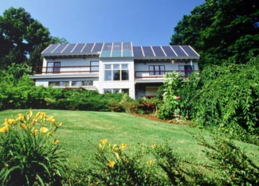
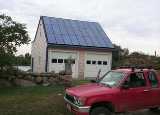
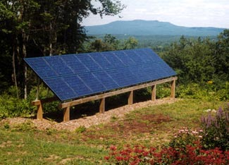
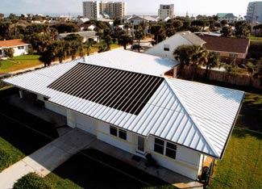
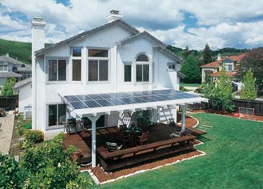
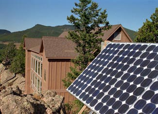

Have you ever wondered whether a solar-electric system is right for your home? There are a lot of good reasons to consider solar power. It’s a great choice for the environment, because with photovoltaic (solar-electric) panels you can get your electricity from clean, renewable solar energy, rather than polluting fossil fuels such as coal, natural gas and oil. In most circumstances, installing solar panels can also save you a lot of money.
To figure out whether solar-electric panels make sense for you, start by considering these questions:
1. Do you have a sunny, south-facing space to mount solar panels? Chances are you do, because there are a lot of options (check out the Image Gallery for examples).
2. How much will it cost for a solar-electric system that meets your needs?
3. Will solar power save you money in the long-term?
The last two questions are the trickiest. To begin with, you’ll need to decide if you want a grid-connected system, or if you would prefer to be “off the grid,” and completely independent of the electric utility. (More about those options here.)
But how much solar power will cost you also depends on your location. For example, the same set of solar panels will produce more electricity in the sunny Southwest than in rainy Seattle. Another important factor to consider: Some states offer hefty rebates and tax incentives for purchasing solar-electric systems.
So how do you find out whether solar makes sense for where you live?
You can find many great websites for learning about solar power (more on that below), but there’s so much information online that it can be a bit overwhelming. To help cut through the fog, I contacted Real Goods, a renewable energy retailer and solar installer that’s been selling solar-electric panels for more than 30 years. I spoke with Liz Huntington, the marketing director, and we talked about what people should know before they start shopping for solar panels.
Liz said the main thing to know is that when you’re looking at the cost, you have to think long-term. “Often there is sticker shock. When you’re looking at the numbers, you have to think about it as an investment.” She says that in the end the question is, would you rather own your power or rent it?
So how much do solar-electric systems cost? An initial estimate on an average size solar-electric system might come in at $20,000 to $40,000 - or more. But as Liz points out, an average American household can expect to spend more than $100,000 over the next 25 years on electricity. Buying a solar-electric system is like buying that electricity up front, and depending on the details of your situation, making that investment now can save you a lot of money in the future. It also creates immediate cash flow and increases the value of your home, which can help offset that sticker shock. New federal tax credits can help, too. These renewable energy incentives give you a 30 percent dollar-for-dollar tax credit for the price of the panels, and if your state offers additional incentives, you can end up saving as much as 50 percent!
Another thing Liz says people should keep in mind is that if you’re serious about installing solar panels, there is a certain amount of effort involved in working out the details. “It’s just like any other construction project, like a home remodel. You’re going to want to go through the same process to make an informed decision,” she says.
You have to do your homework to get the best deal and be sure you get the best quality- after all, you don’t want just anyone poking holes in your roof. A safe bet is to choose a professional installer. That means contacting different companies and getting bids. Liz also suggests checking a company’s record with the Better Business Bureau, and asking the installer lots of questions about their previous experience in construction and with solar. And to keep things simple, look for a professional installer who will take care of all the design, permitting, installation and rebate paperwork.
Finally, Liz says, if you’re considering solar power, it’s a good idea to start thinking about your own daily habits. “It’s very important to understand how your electricity is being billed and what your electric usage is. There might be ways to minimize your charges (are you running appliances during peak hours?) and minimize your usage (are you already using energy-efficient light bulbs?) so that you don't need as big of a system.”
That brings us to a great place to start exploring solar, the website FindSolar.com, which is hosted by the American Solar Energy Society (ASES). Their handy solar calculator is a remarkably quick and easy way to get a lot of information about how solar-electric panels would work in your location. All you have to type in is your ZIP code, the name of your utility, and your average monthly electricity bill and it will give you a rough estimate on how much a solar-electric system may cost you.
Here are a few other things this solar calculator will tell you:
Of course, this is just a starting place. Getting a free site evaluation from a local installer will give you the most accurate assessment, because an installer will take into account factors such as shading from trees and the direction your roof faces. It’s important to base your decision on real world numbers and keep in mind that a professional estimate may end up being less expensive than what shows up in the solar calculator. Nevertheless, the web is a great place to do some initial research.
Here are some other helpful online tools and references:
There’s a lot of great information out there. So just one final question for you: Are you ready to get started?
If you have a solar-electric system at home or have considered purchasing one, you can share your experiences by posting a comment below.
|
 SOLAR DESIGN ASSOCIATES/DOE/NREL Solar-electric panels on a south-facing roof in Brooklyn, Mass. |
 ENTECH ENGINEERING/DOE/NREL This roof-mounted solar-electric system is located on a garage in Block Island, R.I. |
 CAROLYN A. DEMOREST/DOE/NREL Solar-electric panels for a home in New Hampshire. The roof of this house was shaded by large pines, so a freestanding system was installed instead. |
|
 STEVEN SPENCER/DOE/NREL A solar-electric system is integrated into the metal standing-seam roof of this house in New Smyrna Beach, Fla. |
 ASTROPOWER/DOE/NREL Photovoltaics integrated into a solar awning over a back porch in California. |
 DAVE PARSONS/DOE/NREL An off-grid solar-powered home in Golden, Colo. |